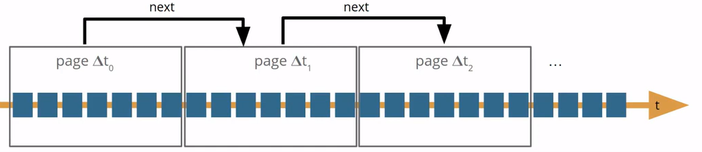

Specification
What is a Linked data Event Stream?
The Linked Data Event Stream (LDES) specification (ldes:EventStream) allows data publisher to publish their dataset as an append-only collection of immutable members in its most basic form. Consumers can host one or more in-sync views on top of the default (append-only) view.
An LDES is defined as a collection of immutable objects, often referred to as LDES members.
These members are described using a specific format called RDF, which stands for Resource Description Framework. RDF is one of the corner stones of Linked Data and on which LDES continues to build.
More information on Linked Data can be found here.
The LDES specification is based on a hypermedia specification, called the TREE specification. The TREE specification originates from the idea to provide an alternative to one-dimensional HTTP pagination. It allows to fragment a collection of items and interlink these fragments. Instead of linking to the next or previous page, the relation describes what elements can be found by following the link to another fragment. The LDES specification extends the TREE specification by stating that every item in the collection must be immutable. The TREE specification is compatible with other specifications such as activitystreams-core, VOCAB-DCAT-2, LDP, or Shape Trees. For specific compatibility rules, please refer to the TREE specification.

LDESes apply — as the term implies — the Linked Data principles to data event streams. A data stream is typically a constant flow of distinct data points, each containing information about an event or change of state that originates from a system that continuously creates data. Some examples of data streams include sensor and other IoT data, financial data, etc.
Today, custom code has to be created to integrate data, which makes it rather expensive to integrate multiple data sources. With LDES, a technical standard was created that allows data to be exchanged across silos using domain-specific ontologies. An LDES allows third parties to build specific services (WFS, SPARQL endpoint) themselves on top of their own database that is always in sync with the original dataset.
An LDES is a constant flow of immutable objects (such as version objects of addresses, sensor observations or archived representations) containing information changes that originates from a system that continuously creates data. Compared to other event stream specification, the LDES specs opts to publish the entire object for every change.
Furthermore, LDES increases the usability and findability of data, as it comes in a uniform Linked Data standard published on an online URI endpoint. As a result, an LDES is self-descriptive meaning and more data can be found by following the links.
In a nutshell, there are several reasons why there was a need to develop the Linked Data Event Streams specification:
-
Linked Data is a powerful paradigm for representing and sharing data on the Web. Still, it has traditionally focused on representing static data rather than events or changes to that data.
-
The use of event streams is becoming increasingly prevalent on the Web, as it enables applications to exchange information about changes to data in real-time efficiently.
-
There was a need for a semantic standard that provides a uniform way to exchange data so that different systems could easily exchange data.
-
Linked Data Event Streams allow applications to subscribe to a stream of data and receive updates in real-time.
Structure of a Linked Data Event Stream
As defined above, an LDES is a collection of members or immutable objects. The LDES spec works both for fast moving data and slow moving data. An example of fast moving data, such as sensor observations, is shown in the example below.
The base URI for LDES is https://w3id.org/ldes#, with the preferred prefix being `ldes`.
@prefix ldes: <http://w3id.org/ldes#> .
@prefix tree: <https://w3id.org/tree#> .
@prefix sosa: <http://www.w3.org/ns/sosa/> .
@prefix xsd: <http://www.w3.org/2001/XMLSchema#> .
<C1> a ldes:EventStream ;
ldes:timestampPath sosa:resultTime ;
tree:shape <C1/shape.shacl> ;
tree:member <observation1> .
<observation1> a sosa:Observation ;
sosa:resultTime "2021-01-01T00:00:00Z"^^xsd:dateTime ;
sosa:hasSimpleResult "..." .
The observation entity (`<observation1>`) is considered to be immutable, and its existing identifiers can be utilized as such.
The specification indicates that an ldes:EventStream should have the following properties:
tree:member→ indicating the members of the collectiontree:shape→ a machine-readable description of the members in the collection. Can be SHACL or ShEx.
Otherwise, an ldes:EventStream may have these properties:
ldes:timestampPath→ indicates how a member precedes another member in the LDES, using a timestamp.ldes:versionOfPath→ indicating the non-version object. See example in the specification.
As stated above, an LDES can also publish a slow moving dataset, such as street names. An example is shown below.
@prefix ldes: <http://w3id.org/ldes#> .
@prefix rdfs: <http://www.w3.org/2000/01/rdf-schema#> .
@prefix dcterms: <http://purl.org/dc/elements/1.1/> .
@prefix tree: <https://w3id.org/tree#> .
@prefix sosa: <http://www.w3.org/ns/sosa/> .
@prefix xsd: <http://www.w3.org/2001/XMLSchema#> .
<C1> a ldes:EventStream ;
tree:shape <C1/shape.shacl> ;
tree:member <streetname1-v1>, <streetname1-v2> .
<streetname1-v1> rdfs:label "Station Road" ;
dcterms:isVersionOf <streetname1> ;
dcterms:created "2020-01-01T00:10:00Z"^^xsd:dateTime .
<streetname1-v2> rdfs:label "Station Square" ;
dcterms:isVersionOf <streetname1> ;
dcterms:created "2021-01-01T00:10:00Z"^^xsd:dateTime .
This example introduces the concept of versions, because certain entities, such as street names, do not understand the concept of time. In this example, versions of street names are published, ensuring the immutability of the LDES members. When publishing versions of entities, extra information (dcterms:isVersionOf) must be added in order to be able to link these version to an entity. Not introducing versions for entities that do not understand the concept of time would lead to an incorrect implementation of the LDES spec, as shown below.
@prefix ldes: <http://w3id.org/ldes#> .
@prefix rdfs: <http://www.w3.org/2000/01/rdf-schema#> .
@prefix dcterms: <http://purl.org/dc/elements/1.1/> .
@prefix tree: <https://w3id.org/tree#> .
@prefix sosa: <http://www.w3.org/ns/sosa/> .
@prefix xsd: <http://www.w3.org/2001/XMLSchema#> .
<C1> a ldes:EventStream ;
tree:shape <C1/shape.shacl> ;
tree:member <streetname1> .
<streetname1> rdfs:label "Station Road" ;
dcterms:created "2020-01-01T00:10:00Z"^^xsd:dateTime .
<streetname1> rdfs:label "Station Square" ;
dcterms:created "2021-01-01T00:10:00Z"^^xsd:dateTime .
In this example, the entity with HTTP URI <streetname1> is not longer immutable, which is a direct conflict with the definition of the LDES spec.
It is important to note that once a client processes a member of an LDES, it should never have to process it again. Therefore, a Linked Data Event Stream client can maintain a list of already processed member IRIs in a cache. A reference implementation of a client is available as an open-source [SDK](https://github.com/Informatievlaanderen/VSDS-Linked-Data-Interactions/tree/main/ldi-core#1-ldes-client) as part of the Flanders Smart Data Space initiative.

Features of the LDES spec
Fragmentation and pagination
An LDES focuses on allowing clients to replicate a dataset’s history and efficiently synchronise with its latest changes. Linked Data Event Streams may be fragmented when their size becomes too big for one HTTP response. Fragmenting an LDES has two main advantages:
- It speeds up certain queries. E.g. an autocompletion client will solve its queries faster using a substring fragmentation than a lineair (append-only) fragmentation
- It allows data consumers to replicate/stay in sync with only the part of the dataset they are actually interested in.
The most basic fragmentation of an LDES is called partitioning, which creates a linear fragmentation, appending the newest members on the latest fragment.
@prefix ldes: <http://w3id.org/ldes#> .
@prefix tree: <https://w3id.org/tree#> .
@prefix xsd: <http://www.w3.org/2001/XMLSchema#> .
<C1> a ldes:EventStream ;
ldes:timestampPath sosa:resultTime ;
tree:shape <C1/shape.shacl> ;
tree:member <observation1>, ... ;
tree:view <?page=1> .
<?page=1> a tree:Node ;
tree:relation [
a tree:GreaterThanOrEqualToRelation ;
tree:path sosa:resultTime ;
tree:node <?page=2> ;
tree:value "2020-12-24T12:00:00Z"^^xsd:dateTime
] .
Each relation to another fragment is semantically described, helping clients to decide whether or not it is interesting to follow the relation.
The LDES server building block implements various fragmentations. More information can be found [here](https://informatievlaanderen.github.iodocs/LDES_server.html#fragmentation).
Retention policy
A retention policy is a set of rules determining how long data should be kept or deleted. A retention policy can be applied to an LDES to manage the storage and availability of data objects over time.
Currently, the LDES spec defines two retention policies, a time-based an a version-based retention policy. More information about the retention policies can be found in the spec.
The LDES Server buildling block implements a time-based retention policy. More information can be found [here](https://informatievlaanderen.github.iodocs/LDES_server.html#retention-policy).
SHACL
SHACL (Shapes Constraint Language) is a standard for validating RDF data and ensuring that it conforms to a particular structure or shape. In the context of the Linked Data Event Stream (LDES), SHACL shapes are used to provide a machine-readble description of the expected structure of members in the stream.
By incorporating SHACL shapes, LDES provides a powerful tool for ensuring data quality and consistency, making it a reliable and trustworthy source of data for various applications. By defining a SHACL shape for the LDES, data producers can ensure that the members they add to the LDES adhere to the required structure, while data consumers can use the shape to validate and reason about the data they receive.
As a consequence of the immutability of the members, this shape *may* evolve, but it **must** always be backwards compatible to the earlier version. When the new shape is not backwards compatible, a new LDES must be created.
DCAT
DCAT is an RDF vocabulary for data catalogues on the Web, enabling easy interoperability and discoverability of metadata for datasets, data services, and portals. It standardises properties for describing datasets, access information, and data services. By using DCAT, publishers can increase their datasets’ exposure and facilitate data sharing and reuse.
The LDES Server building block allows to pass a static RDF file on startup, containing DCAT to describe the LDES(es). The server reads and publishes the content.